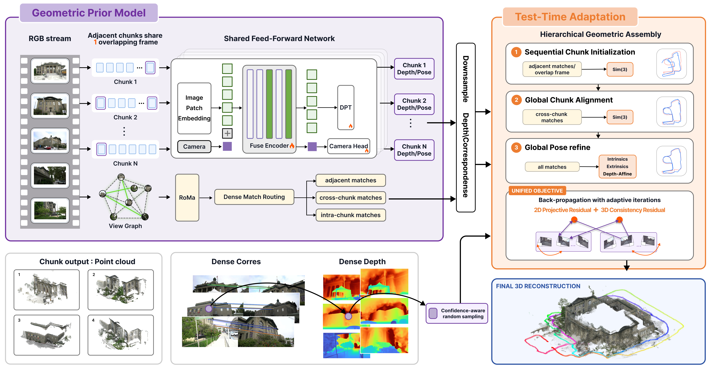
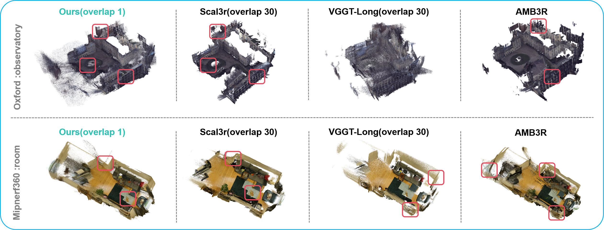

Reconstruction videos
Explore indoor, outdoor, driving, and urban-scale reconstructions across four long-sequence benchmarks.
Barn
Tanks & TemplesMeeting Room
Tanks & TemplesVirtual KITTI 2
VKITTI2Keble College
Oxford SpiresBlenheim
Oxford SpiresOverview
Abstract
Long-sequence 3D reconstruction from RGB videos requires both accurate local geometry and globally consistent camera motion. Feed-forward models provide strong depth and pose predictions, but their memory cost prevents joint inference over long sequences. Chunk-wise processing improves scalability, yet independently predicted chunks often exhibit scale drift, pose errors, and point-cloud misalignment.
We present GeoWeaver, a unified framework comprising a Geometric Prior Model (GPM) and Test-Time Adaptation (TTA). The GPM predicts chunk-wise depth, confidence, and camera parameters as adjustable geometric priors. TTA then performs sequential initialization, global chunk-level Sim(3) alignment, and coarse-to-fine refinement of camera poses, affine depth corrections, and intrinsics. Dense correspondences provide adjacent, cross-chunk, and long-range constraints, while a robust CDF-style objective jointly optimizes weighted 2D reprojection and 3D consistency residuals.
Experiments across diverse long-sequence benchmarks demonstrate improved camera accuracy, global consistency, and point-cloud quality. Applying the same TTA procedure to different geometric prior models consistently improves their trajectory estimates, showing that GeoWeaver is not tied to a specific GPM.
Approach
Method overview
A feed-forward geometric prior model supplies reliable local predictions; hierarchical test-time adaptation turns them into a coherent global reconstruction.

Chunk-wise geometric priors
A long RGB sequence is split into short chunks with one shared frame. The GPM predicts depth, confidence, camera pose, and intrinsics at bounded memory cost.
Dense correspondence routing
Confidence-aware dense matches connect temporal neighbors and long-range co-visible views, supplying constraints to each adaptation stage.
Hierarchical geometric assembly
Global Sim(3) alignment corrects chunk drift before joint refinement of frame poses, affine depth, and camera intrinsics.
Evaluation
Results
GeoWeaver produces coherent geometry, better aligned trajectories, and fewer discontinuities while using only one shared frame between adjacent chunks.
Oxford Spires Per-Scene Results
Relative rotation error (RRE, degrees) ↓ and absolute trajectory error (ATE, metres) ↓.
| Method | Keble-04 | Observatory-01 | Blenheim-05 | Christ Church-02 | Average | |||||
|---|---|---|---|---|---|---|---|---|---|---|
| RRE ↓ | ATE ↓ | RRE ↓ | ATE ↓ | RRE ↓ | ATE ↓ | RRE ↓ | ATE ↓ | RRE ↓ | ATE ↓ | |
| MBA Opt. | 4.250 | 35.240 | 1.270 | 23.710 | 1.810 | 38.260 | 5.830 | 20.080 | 3.290 | 29.323 |
| DA3 FF | 14.442 | 22.664 | 7.087 | 8.365 | 2.123 | 1.538 | 16.193 | 33.992 | 9.961 | 16.640 |
| VGGT-Long Chunk-FF | 16.850 | 13.350 | 14.990 | 4.250 | 18.480 | 11.240 | 25.610 | 20.680 | 18.983 | 12.380 |
| Scal3R Chunk-FF | 7.830 | 2.130 | 5.270 | 1.570 | 7.430 | 2.560 | 6.830 | 16.000 | 6.840 | 5.565 |
| LoGeR Chunk-FF | 11.000 | 4.134 | 8.000 | 5.632 | 9.800 | 2.621 | 3.700 | 3.553 | 8.100 | 3.985 |
| LingBot-Map Stream | 2.090 | 8.870 | 0.970 | 6.960 | 1.040 | 4.570 | 1.240 | 3.880 | 1.335 | 6.070 |
| AMB3R Hybrid | 8.375 | 4.940 | 5.368 | 1.220 | 10.740 | 11.830 | 10.140 | 12.760 | 8.655 | 7.687 |
| GeoWeaver Hybrid | 0.432 | 1.430 | 0.360 | 1.820 | 0.330 | 1.430 | 1.180 | 12.810 | 0.575 | 4.372 |
Mip-NeRF 360 Visualization

Reference
BibTeX
If you find GeoWeaver useful, please cite our work.
@article{jiang2026geoweaver,
title = {{GeoWeaver}: Accurate Long-Sequence {3D} Reconstruction via Hierarchical Geometric Assembly},
author = {Jiang, Tinghao and Tang, Sheng and Wei, Shengzhe and Fang, Juntong and Zhang, Weiqi and Zhou, Junsheng and Li, Zesong},
journal = {arXiv preprint arXiv:2608.17389},
year = {2026}
}